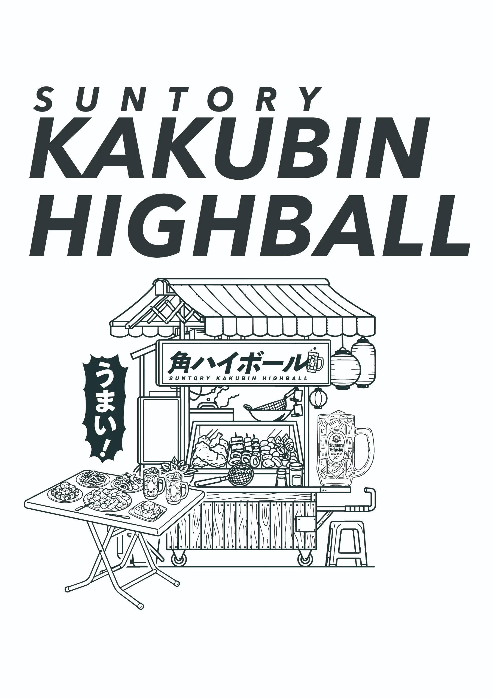
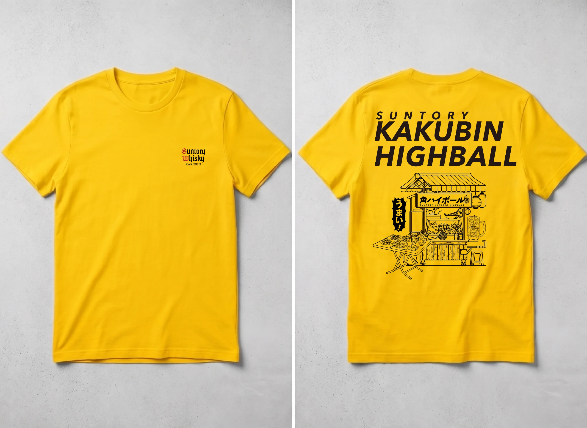
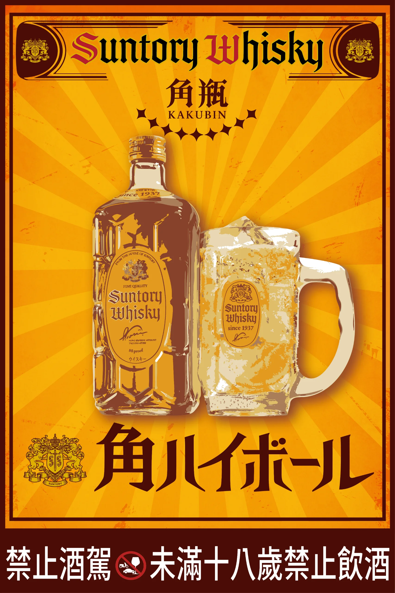
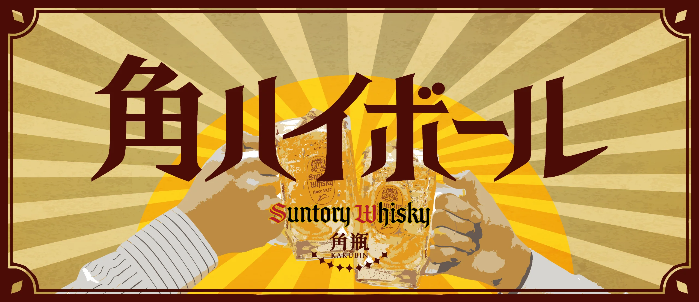

ScopeGraphic Design / Photography / Video Production / Merchandise Production
Kakubin Gift with Purchase
Kakubin Gift with Purchase




Signboard — Kakubin Bistro SatsukiMore Work.
Scroll to browse — click a thumbnail to enlarge it on the left.